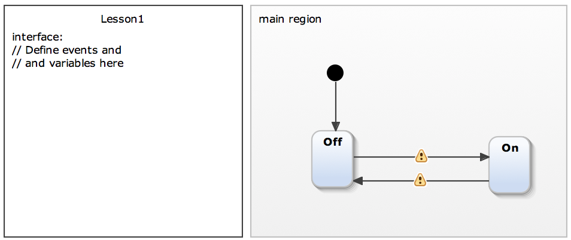
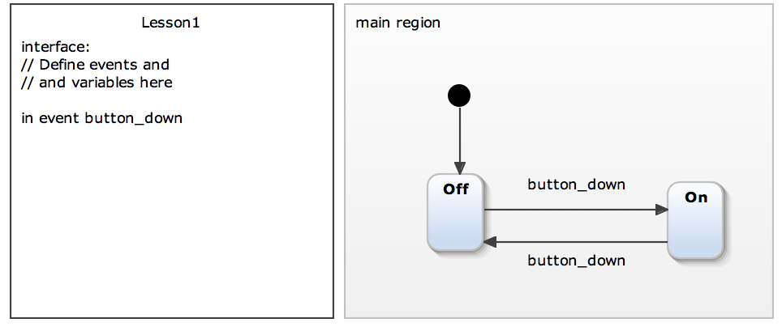
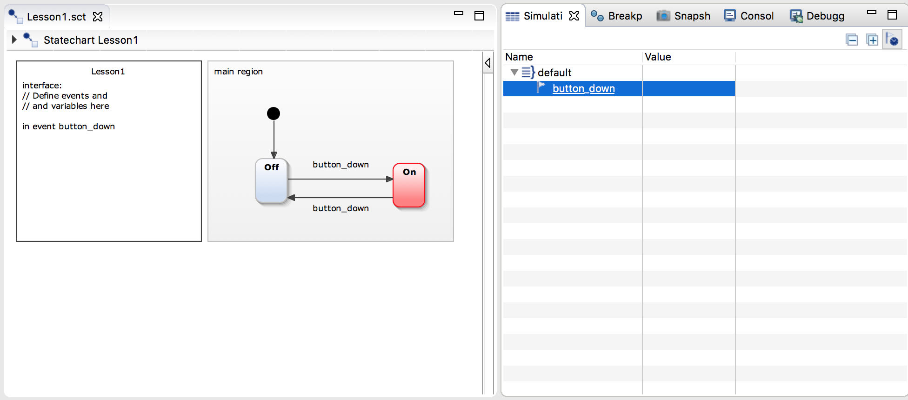

Creating a statechart model for the light switch
- Right-click on project Training_lesson1 and choose New → Statechart Model.
- Give it a name e.g., Lesson1.sct or switch.sct.

Adding states and transitions to the light control
To define this behavior described above you should:
- Rename StateA to Off.
- Add a new state with name On to the statechart.
- Connect both states with transitions. One transition from Off to On and another transition in the opposite direction.
When you are ready, then the model should look like this:

You'll notice two warning signs.
- Place the mouse cursor above the warning markers! What do you see?
The editor gives a hint that no trigger is specified for the transition. You will have to add events as the next step …
Adding events
To define and use events you will modify the definition section, i.e. the textual part of the model.
- Double-click into the definition section on the left side. A text editor will open.
- Place the caret below the comment and define an incoming event with the name button_down. Hint: use [Ctrl]+[Space] to get proposals.
- Now you have to specify that the transition should be taken if the button_down event occurs. Select a transition and start typing the event name button_down. As soon as the text editor opens you can once again use [Ctrl]+[Space] to see proposals and complete the input.
When you are done, the model should look like this:

There shouldn't be any warning or error markers.
Simulating the statechart
Now it is time to check the light control statechart using the simulator.
- Right-click on the statechart model file in the project explorer on the left.
- Choose Run As → Statechart Simulation from the context menu.
- The Off state should get a red background colour.
- Use the simulation view to raise the button_down event.
You will be able to switch between both states, and you have used the basic and most commonly used features of the editor and the simulator.
